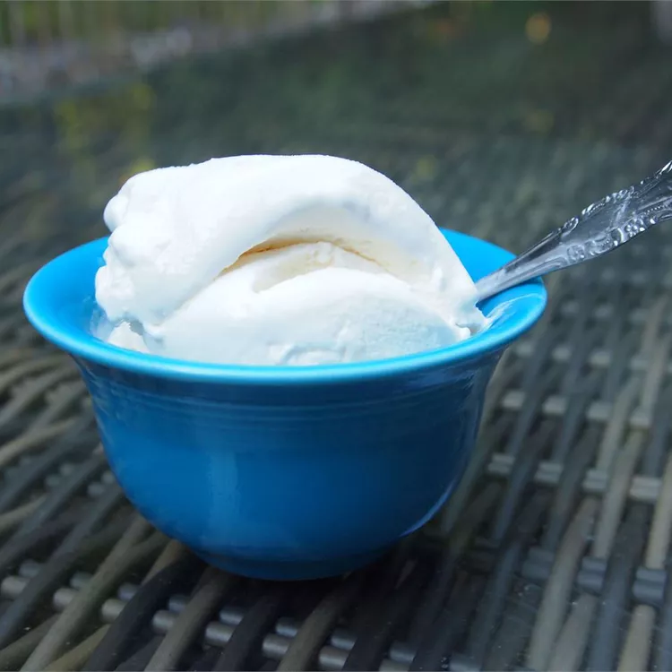

Easy Vanilla Ice Cream

Description
This easy ice cream recipe requires no cooking and no eggs. Half-and-half and cream team up with sugar to create a simple, old-fashioned vanilla ice cream that tastes great
Ingredients
- 2 quarts half-and-half
- 1 ½ cups white sugar
- ½ pint heavy cream
- 4 teaspoons vanilla extract
- 1 pinch salt
Steps
- Combine half-and-half, sugar, cream, vanilla, and salt in the freezer container of an ice cream maker.
- Freeze according to the manufacturer's instructions, about 20 minutes.
- Transfer to an airtight container and freeze until firm, about 4 hours.